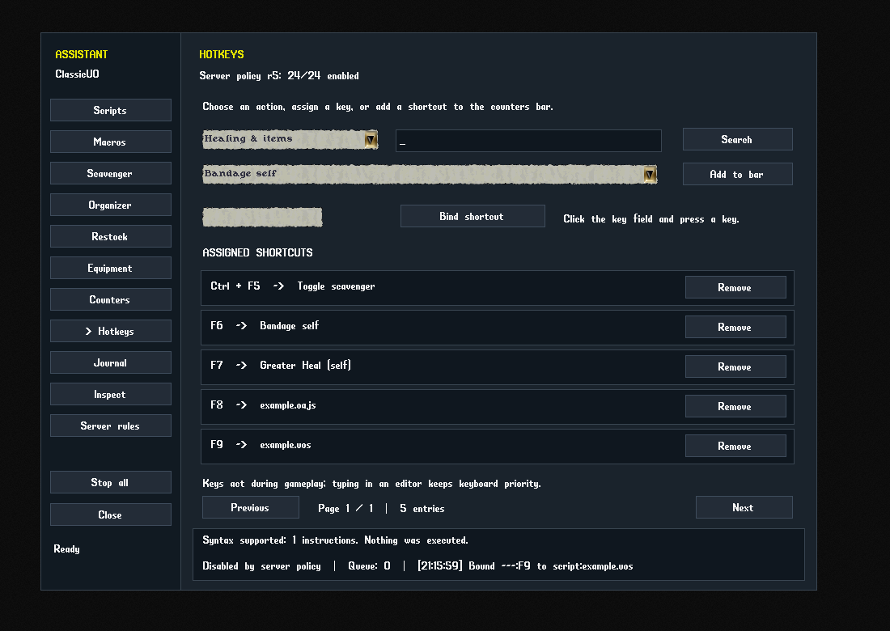
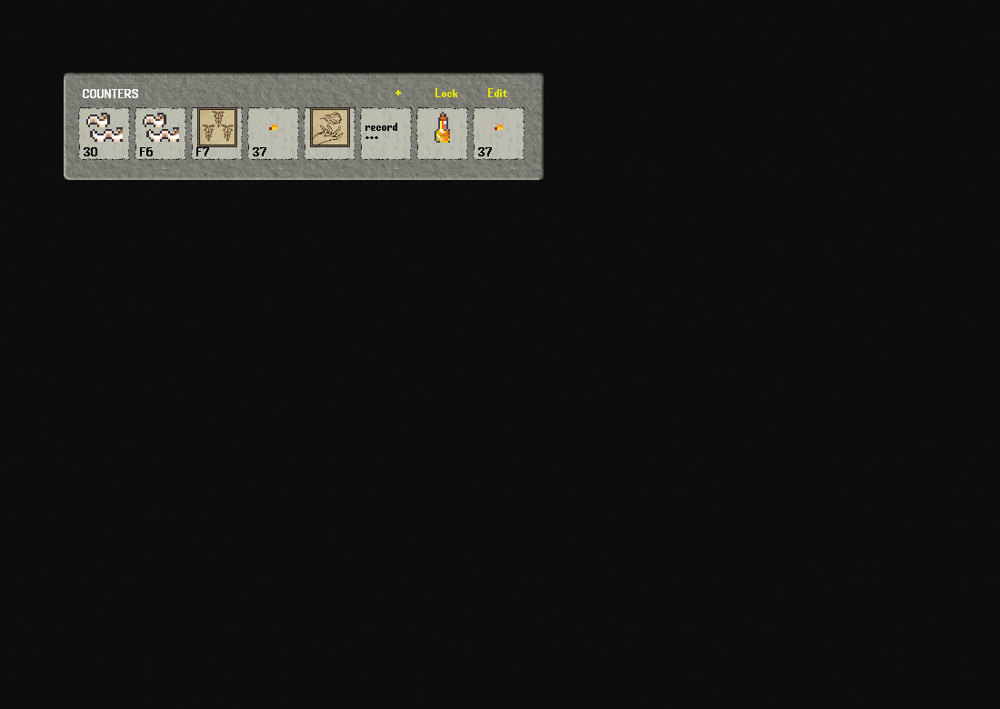
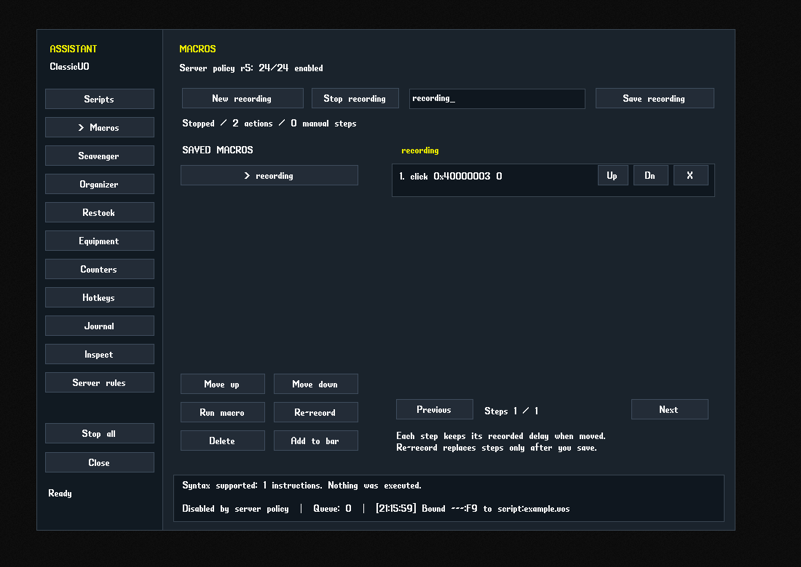
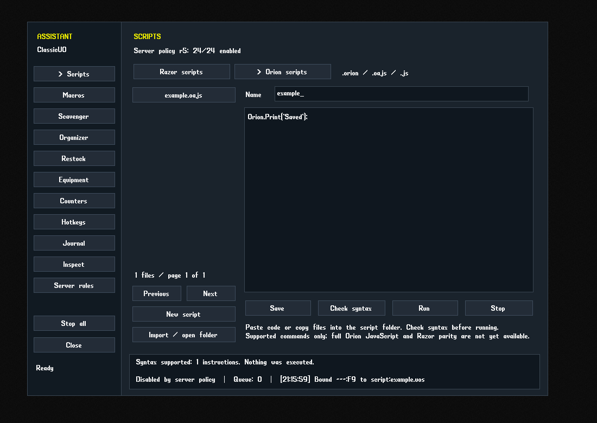
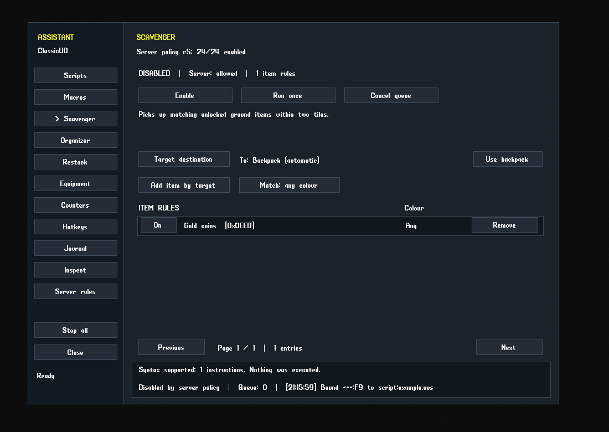
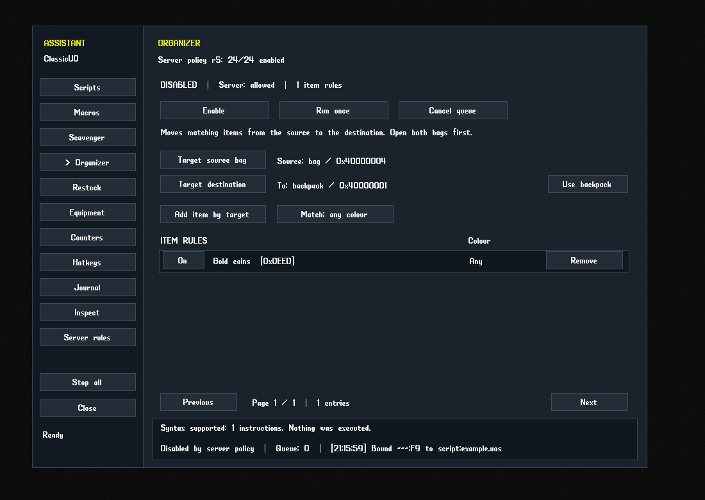
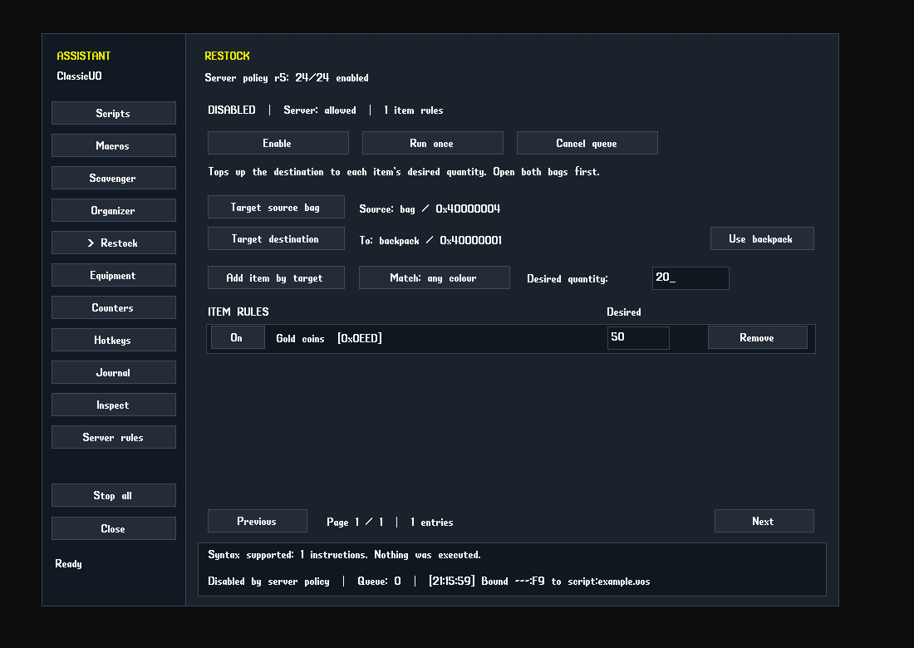
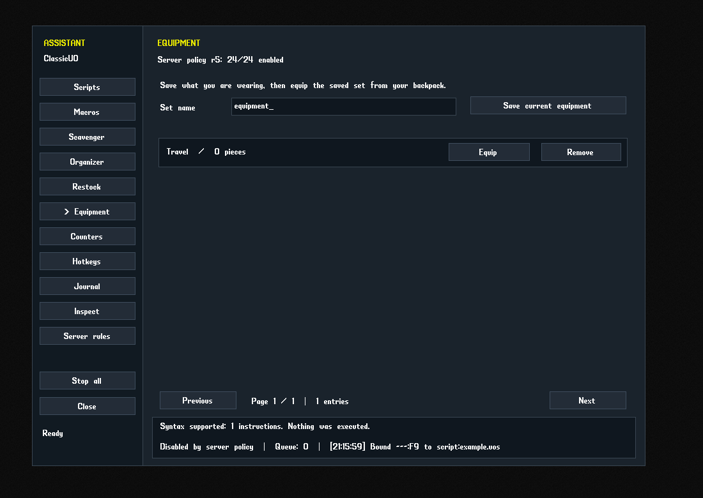

Counters with item pictures
Live quantities, spell icons and action shortcuts. Drag items onto the bar, rearrange slots, double-click to use, right-click to remove and lock the layout.
CUSTOM CLASSICUO · UPDATE 3 · WINDOWS x64
Record macros, build an item counters bar, assign hotkeys and manage your bags from one built-in assistant.
Standard edition · without Invicta gumps
Includes the Windows runtime and first-time setup utility. Use your shard's UO game data and connection details. The built-in assistant needs the server's policy helper before actions run.

WHAT IS NEW
Live quantities, spell icons and action shortcuts. Drag items onto the bar, rearrange slots, double-click to use, right-click to remove and lock the layout.
Record supported player actions, save a macro, re-record it, delete it or move its place in the library. Reorder or remove steps; earlier versions stay in history.
Razor and Orion each have their own file list and editor mode. Import, check syntax, save and run the documented command subset.
Scavenger, Organizer and Restock have their own rules, item targeting, container choices and controls. Save equipment sets on the Equipment page.
Bandage self, spell targets, items, skills, combat actions, saved macros and scripts share the action picker. Targeted healing waits for a fresh server cursor.
The Sphere master script controls the assistant with a master switch and individual 0/1 feature flags. Staff tools require server-confirmed PLEVEL 4 or higher.
Workspace, inventory and journal search, saved layouts, map tools, GM catalogs, spawning workflows and the optional UO Asset Studio bridge remain included. Standard uses native gumps from your selected game data.
SEE IT IN THE CLIENT
Real client captures using controlled offline sample data, showing the version offered on this page.







FIRST INSTALLATION
SPHERE SERVER ADMINISTRATORS
The full master script and both staff helpers are included in Server-Scripts, alongside the client folder. Install them in the server's active scripts tree. Players do not install these helpers.
Back up the active scripts and resource list. Copy the helpers into the matching scripts/functions directories. If not already loaded by a folder include, add their relative paths once inside the existing [RESOURCES] section. Follow Server-Scripts/INSTALL.txt and pages 23–29 of the PDF.
Increase assistant_revision after changing policy, then use the server's normal resync or restart procedure. Open Assistant → Server rules to inspect received permissions. Missing, expired or invalid replies lock assistant actions.
Switches do not grant staff privileges. The server still controls command permissions and game rules. The fastrotation flag is reserved; this release has no separate fast-rotation implementation. Other server engines need compatible helpers.
A custom community build based on ClassicUO 1.1.0.0, updated 26 September 2026 after a functional audit. This download is Standard, without bundled Invicta gumps.
The assistant implements the documented Orion/Razor command subset, not their complete external engines. Check syntax before running imported scripts. The recorder captures supported outgoing actions; trade, complex editors and other unsupported interactions may need manual steps. UO Asset Studio is a separate application.
459 client tests and 18 setup tests passed. Both running editions passed the native behavior checks, including 123 permission refusals each without sending an action packet. An isolated Sphere server confirmed staff levels 1–7, mixed feature flags and the Workshop threshold at levels 3 and 4. This revision fixes script syntax and quoted text, alias revocation, hand aliases, settings recovery and nested agent containers. The ZIP includes a feature-by-feature report in Docs/FUNCTIONAL-CHECKS.md. Screenshots use controlled offline data. Actual shard acknowledgements, spell and skill results, spawn validation and display scaling still need gameplay checks.
{kind=link}
{kind=link}
{kind=link}
{kind=link}
{kind=link}
{kind=link}
{kind=link}